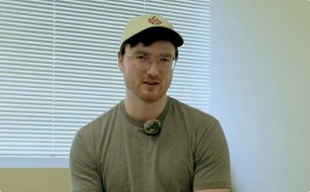
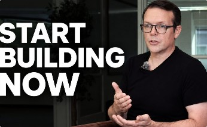
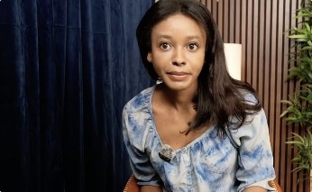
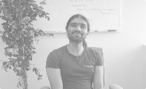
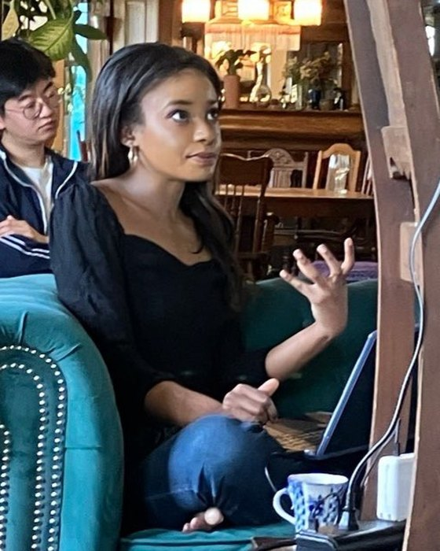

MATS Residency campaign, featuring Ryan Kidd
Campaign · sizzle reel + extended interview
About 30,000 views in the first 24 hours, and Residency applications doubled.
creator, researcher & writer, curious about
our relationship to machines
currently: making AI safety media @ MATS Research
Research, data and media, mostly about people and the machines they live with.
Making video essays, interviews and campaigns on AI safety and governance.

About 30,000 views in the first 24 hours, and Residency applications doubled.

International AI agreements, verification and compute governance, with a former Department of Defense official.

What the information age can teach us about the shift into the intelligence age.

Led data strategy and growth for a venture-backed creator-economy platform.
Affective computing and how people respond to emotion-aware technology. My final research work was used in a BCI-enabled agent for professional upskilling.

Hi, I'm Amina. I'm from Michigan, and I spent a few years in Japan as a J-pop idol.
After that I worked in tech, running data and growth at startups.
Now I'm back in media, making videos and writing.
A few highlights:
Newsletter on affective computing. feelingmachines.substack.com
Newsletter on sociology, philosophy and internet culture. bimbollectual.com
Interviews and short essays on AI and the people building it. youtube.com/@amina-io
Open to roles, research collaborations and speaking. The fastest way to reach me is email.